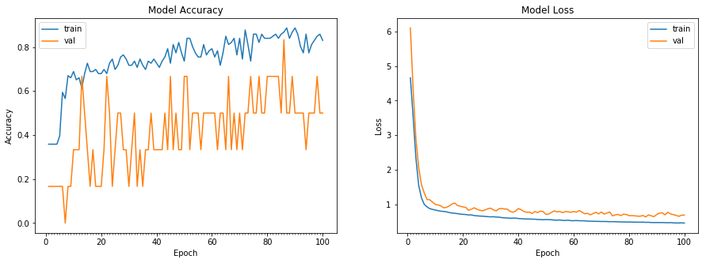

5.评估模型
使用keras进行模型训练时，返回一个history对象，在history对象中，会记录模型在训练过程中参数的变化。
选中 4.评估模型 单元格，插入代码单元格，首先定义一个绘制图像的函数：
def plot_model_history(model_history):
'''
功能：根据history对象，绘制训练集和验证集上loss和acc的变化图
参数：history对象
来源：https://www.tensorflow.org/tutorials/keras/basic_classification?hl=zh-cn
'''
fig, axs = plt.subplots(1,2,figsize=(15,5))
# summarize history for accuracy
axs[0].plot(range(1,len(model_history.history['accuracy'])+1),model_history.history['accuracy'])
axs[0].plot(range(1,len(model_history.history['val_accuracy'])+1),model_history.history['val_accuracy'])
axs[0].set_title('Model Accuracy')
axs[0].set_ylabel('Accuracy')
axs[0].set_xlabel('Epoch')
axs[0].set_xticks(np.arange(1,len(model_history.history['accuracy'])+1),len(model_history.history['accuracy'])/10)
axs[0].legend(['train', 'val'], loc='best')
# summarize history for loss
axs[1].plot(range(1,len(model_history.history['loss'])+1),model_history.history['loss'])
axs[1].plot(range(1,len(model_history.history['val_loss'])+1),model_history.history['val_loss'])
axs[1].set_title('Model Loss')
axs[1].set_ylabel('Loss')
axs[1].set_xlabel('Epoch')
axs[1].set_xticks(np.arange(1,len(model_history.history['loss'])+1),len(model_history.history['loss'])/10)
axs[1].legend(['train', 'val'], loc='best')
plt.show()
运行，本单元格没有输出。
继续插入新的代码单元格，输入：
plot_model_history(history)
运行，一个可能的运行结果是：

会看到训练集和验证集的效果都不太好。那么需要我们 调整模型结构 。
参考文献
1.训练首个神经网络：基本分类 https://www.tensorflow.org/tutorials/keras/basic_classification?hl=zh-cn